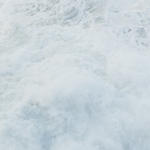

{
"UUID": "574ea552-2d3c-49f4-a4f2-ae165c080d3e",
"Title": "Nazare Wave Study",
"ShortDescription": "Wave photos from Nazare",
"Year": 2026,
"FeaturedWork": "FALSE",
"URL": "nazare-wave-study",
"Modality": [
"Digital"
],
"Medium": [
"Photography"
],
"Tools": [
"Digital camera",
"Photoshop"
],
"Object": [
"Digital image"
],
"Collaborators": [],
"Keywords": [
"Geography",
"Self"
]
}Wave photos from Nazare.
| * | Title | Size (bytes) | View |
|---|---|---|---|
| Nazare I | 259,283 | ||
 | Nazare II | 276,398 | |
| Nazare III | 323,382 | ||
| Nazare IV | 286,459 | ||
| Nazare V | 318,839 | ||
| Nazare VI | 204,621 | ||
| Nazare VII | 299,490 |